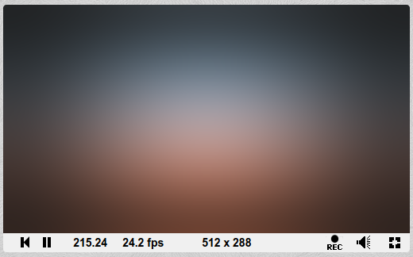
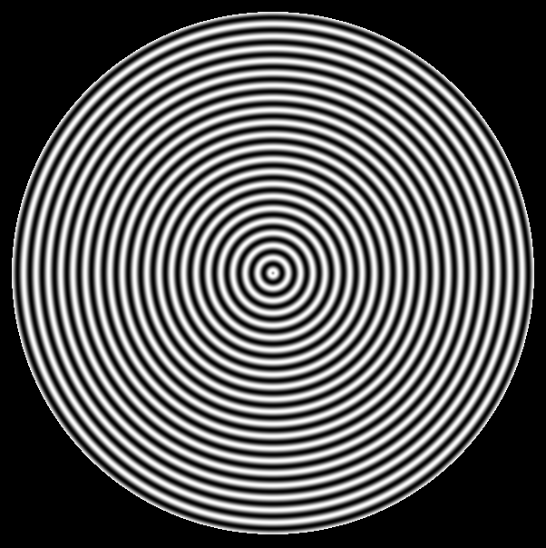

Статический шейдер с вертикально-радиальным градиентом
Данный шйдер использует функцию mix(), вычисляющую линейно-интерполированное значение входных параметров.
Скриншот:

Код (для среды ShaiderToy):
void mainImage( out vec4 fragColor, in vec2 fragCoord )
{
vec2 uv = gl_FragCoord.xy / iResolution.xy;
vec4 orange = vec4(0.533, 0.25, 0.145, 1.0);
vec4 blue = vec4(0.18, 0.23, 0.27, 1.0);
vec4 black = vec4(0.0, 0.0, 0.0, 1.0);
vec4 white = vec4(1.0, 1.0, 1.0, 1.0);
float ratio = iResolution.x / iResolution.y;
float PI = 3.14159265359;
vec4 mixC = mix(orange, blue, sin(ratio * uv.y));
mixC = mix(mixC, black, cos(2.0 * PI * uv.x) / ratio);
mixC = mix(mixC, black, cos(2.0 * PI * uv.y) / ratio);
mixC = mix(mixC, white, 0.1);
fragColor = mixC;
}
Статический шейдер с концентрическими кругами
Шейдер рисует плавные концентрические круги.
Скриншот:

Код (для среды Bonzomatic):
vec4 wavePlate(vec2 position, float maxRadius, float waveLen)
{
vec2 center=vec2(0.5);
float l=length(position - center);
if(l>maxRadius)
{
return vec4(0.0, 0.0, 0.0, 0.0); // Transparent color
}
float c=sin(l/waveLen)/2.0+0.5;
return vec4(c, c, c, 1.0);
}
void main(void)
{
// Translate XY coordinats to UV coordinats
vec2 uvPosition = vec2(gl_FragCoord.x / v2Resolution.x, gl_FragCoord.y / v2Resolution.y);
uvPosition /= vec2(v2Resolution.y / v2Resolution.x, 1);
float sideFieldWidth=(v2Resolution.x-v2Resolution.y)/2; // Width in pixel
float uvSideFieldWidth=(v2Resolution.y+sideFieldWidth)/v2Resolution.y-1;
uvPosition=uvPosition-vec2(uvSideFieldWidth, 0);
gl_FragColor = wavePlate(uvPosition, 0.4, 0.003);
}
Шейдер с солнцем на закате и водой
Мягкая поверхность воды и круглое солнце. Золотистые цвета.
https://www.shadertoy.com/view/4dl3zr